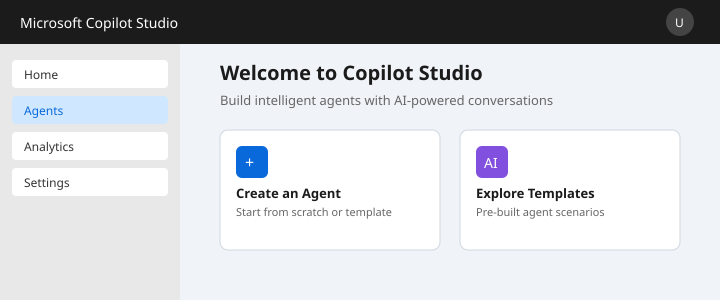
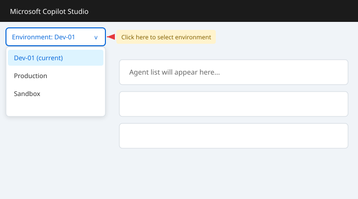
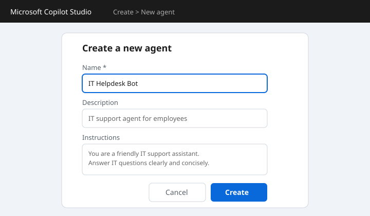
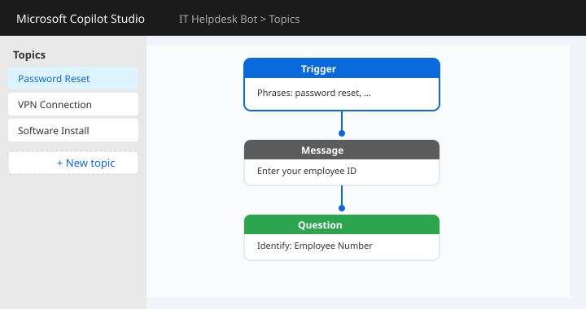
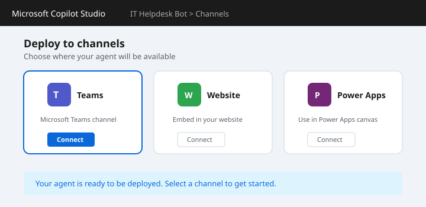

Copilot Agent 핸즈온 가이드
Microsoft Copilot Studio를 사용하여 나만의 에이전트를 만들어봅니다.
개요
이 핸즈온에서는 Microsoft Copilot Studio를 활용하여 커스텀 에이전트를 만드는 전체 과정을 다룹니다. 기본 환경 설정부터 토픽 구성, 테스트, 배포까지 단계별로 진행합니다.

사전 준비
- Microsoft 365 계정 (회사 또는 개발자 계정)
- Copilot Studio 접근 권한
- 웹 브라우저 (Edge 또는 Chrome 권장)
Step 1: 환경 설정
Copilot Studio에 접속하여 새 에이전트를 만들 환경을 준비합니다.
Microsoft 계정으로 로그인하세요.
좌측 상단에서 작업할 환경(Environment)을 선택합니다. 개발용 환경을 사용하는 것을 권장합니다.

Step 2: 에이전트 만들기
새로운 에이전트를 생성하고 기본 설정을 구성합니다.
자연어로 에이전트의 목적을 설명하거나, 빈 에이전트로 시작할 수 있습니다.
이름: IT 헬프데스크 봇
설명: 사내 IT 관련 질문에 답변하는 에이전트
지침: 당신은 친절한 IT 지원 담당자입니다.
사용자의 IT 관련 질문에 정확하고 간결하게 답변하세요.
Step 3: 토픽 구성
에이전트가 응답할 토픽(주제)을 만들어봅니다. 토픽은 사용자의 특정 의도에 대한 대화 흐름입니다.
토픽 추가하기
사용자가 입력할 수 있는 다양한 문구를 등록합니다.
트리거 문구 예시:
- "비밀번호 초기화"
- "비밀번호를 바꾸고 싶어요"
- "패스워드 리셋"
- "비번 변경 방법"
Step 4: 테스트 및 배포
만들어진 에이전트를 테스트하고 채널에 배포합니다.
테스트
화면 좌측 하단의 "에이전트 테스트(Test your agent)" 패널에서 바로 테스트할 수 있습니다.
테스트 대화 예시:
사용자: 비밀번호 초기화하고 싶어요
에이전트: 비밀번호 초기화를 도와드리겠습니다.
사번을 입력해 주세요.
사용자: 12345
에이전트: 12345번 사원님, 임시 비밀번호를 이메일로
발송했습니다. 확인해 주세요.배포
테스트가 완료되면 다양한 채널에 배포할 수 있습니다.
- Microsoft Teams
- 웹사이트 (임베디드)
- Power Apps
- 기타 채널 (Slack, Facebook 등)
